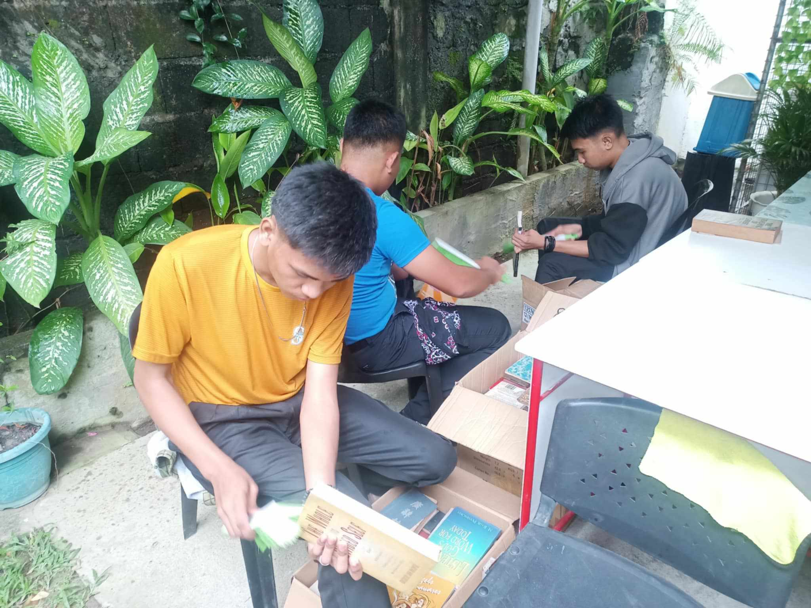
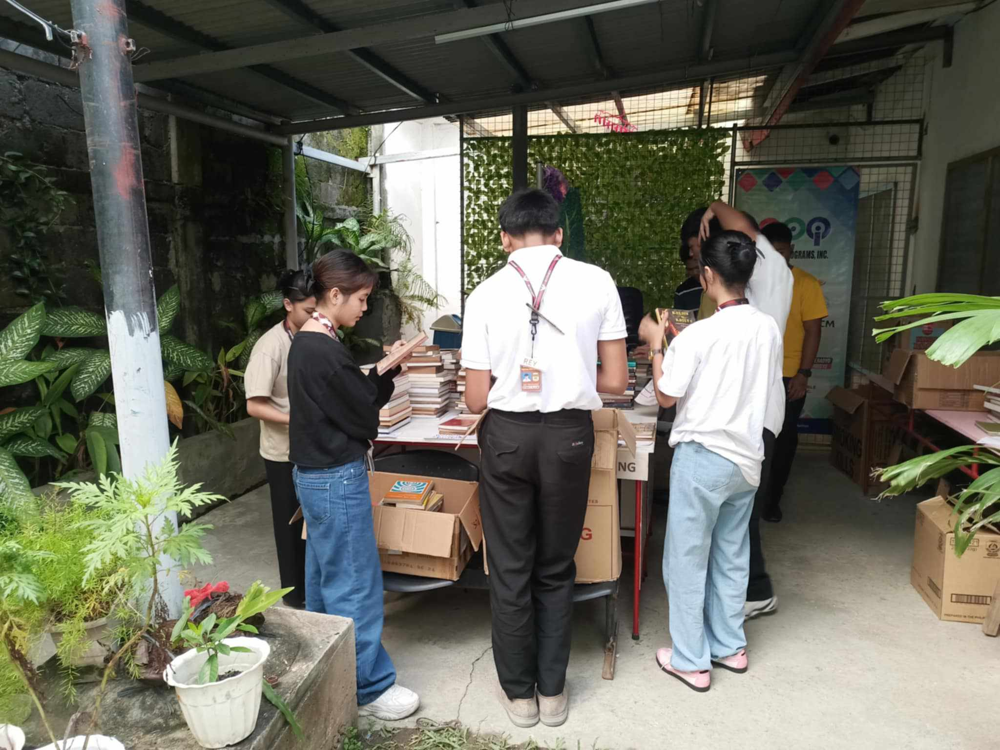
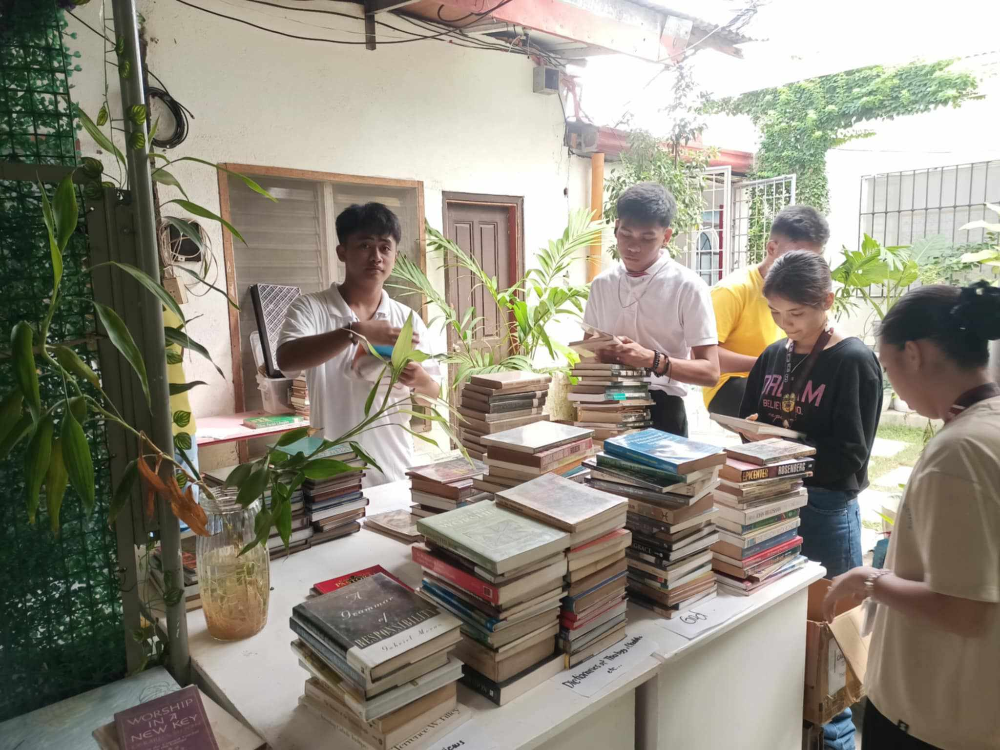
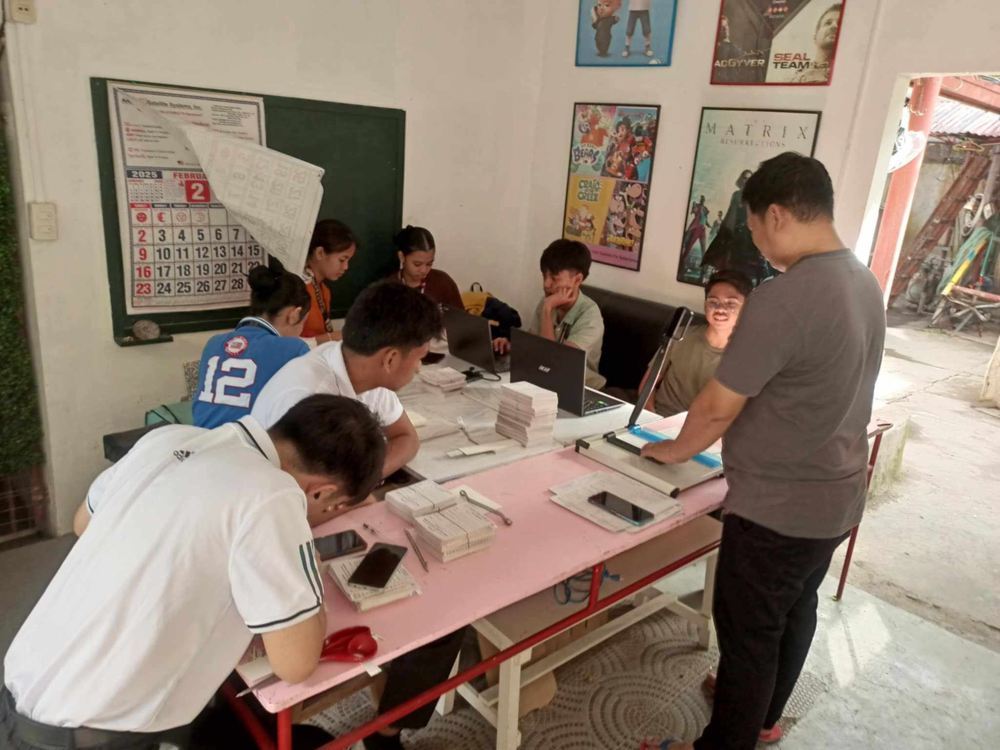
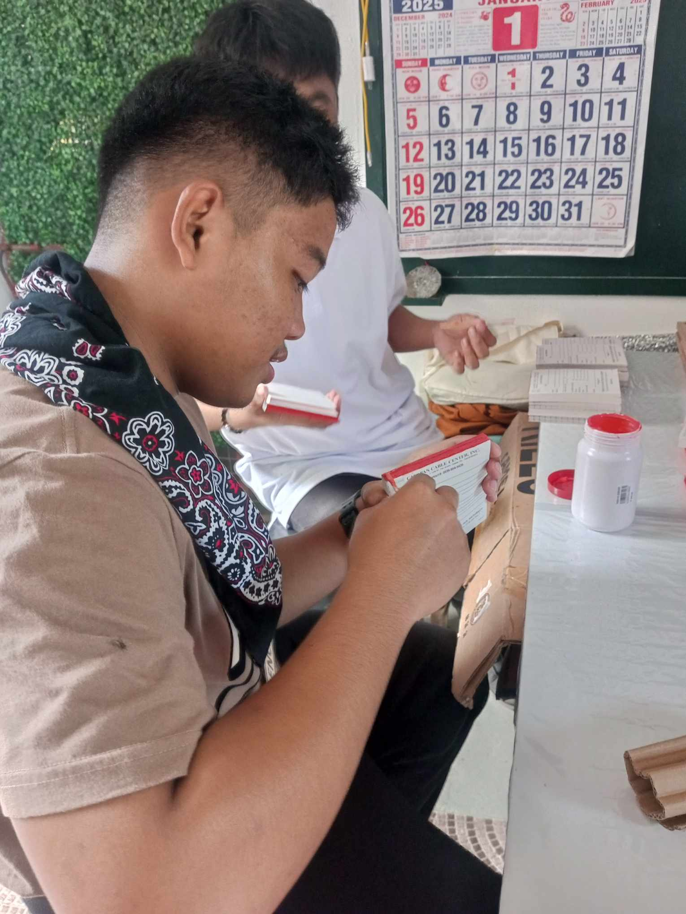
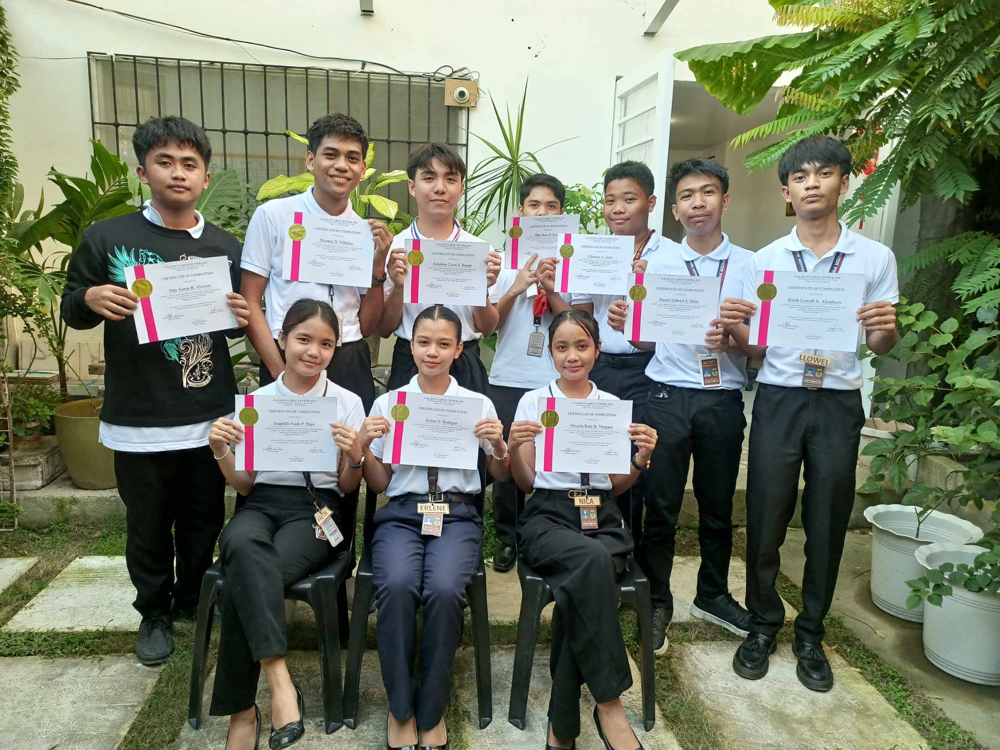

Clarence A. Jerez

Cleaning Books
At Calapan Cable Center, the first task assigned by Sir Jason, the coordinator of the immersion program, was to clean the books. The group was divided into 3 girls and 3 boys, with the boys brushing the books and the girls wiping them down.

Cataloging Books
After we finished cleaning the books, We was assigned the task of cataloging them because the books are going to be donated to the church. My job was to organize and document their details so that they could be properly prepared for the donation and distribution.

Almost Done
We continued cataloging the books, but the process wasn’t as simple—it was a bit confusing at times. However, we were still happy because we were helping each other out, working together as a team to get the job done.

Receipts task
After we finished cataloging the books, we were able to rest, but our tasks didn’t end there. Sir Jason assigned us to coat the receipts next, so we got back to work on the new task.

Finished
Finally were finished on our work, we realized how much we had learned. The tasks had prepared us for real-life challenges, and we ended with a strong sense of accomplishment and gratitude

The Certification
After a long day of immersion, we received our certification. Thanks to everyone because we were united, and also thanks to Sir Jason for everything and to all those who were with us.